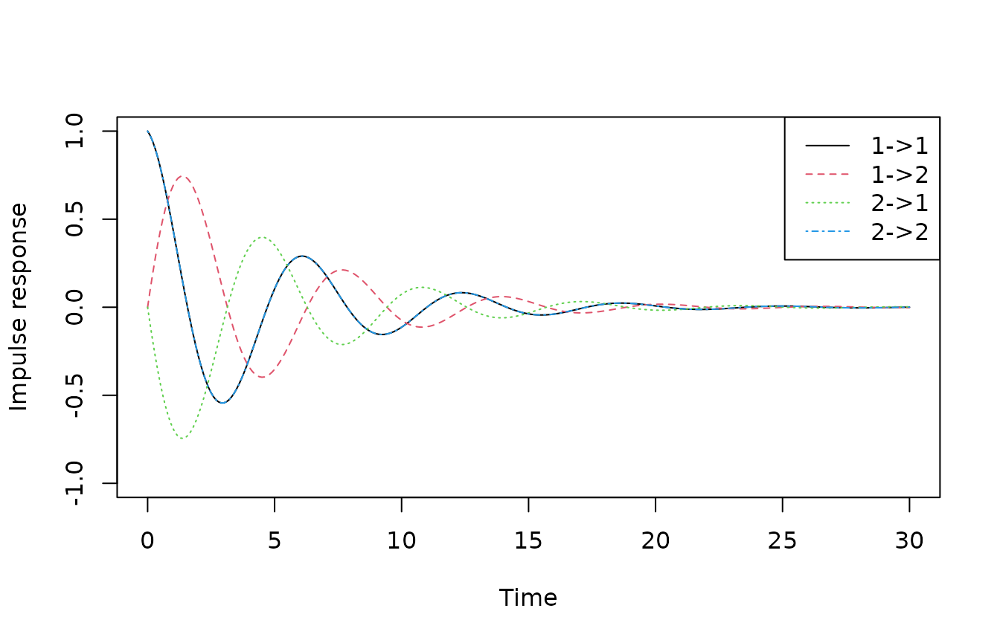
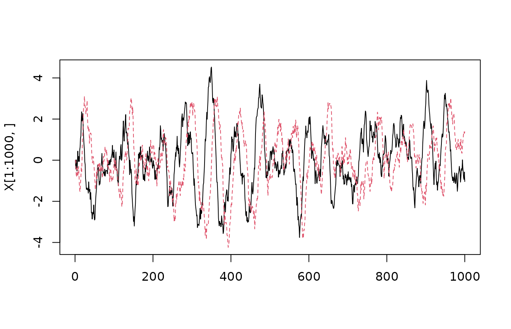

The noisy harmonic oscillator
Uffe Høgsbro Thygesen
2023-03-16
Source:vignettes/NoisyOscillator.Rmd
NoisyOscillator.RmdWe study the noisy harmonic oscillator, given by the two coupled linear SDEs
\[ dX_t = AX_t ~ dt + \sigma ~ dB_t \]
where \(\{B_t : t \geq 0\}\) is two-dimensional standard Brownian motion and
\[ A = \left[ \begin{array}{rr} -\lambda & -\omega \\ \omega & -\lambda \end{array} \right] \]
The following code computes and plots the response of the system to an initial condition. Since there are two states, there are four possible responses. Due to symmetry between state 1 and 2, the response from state 1 to state 1 is identical to that from state 2 to state 2, so we only see three distinct curves.
## Loading required package: Matrix## Loading required package: SDEtools
w <- 1
l <- 0.2
A <- array(c(-l,w,-w,-l),c(2,2))
dt <- 0.1
tt <- seq(0,30,dt)
eAt <- sapply(tt,function(t)as.numeric(Matrix::expm(A*t)))
matplot(tt,t(eAt),type="l",xlab="Time",ylab="Impulse response",ylim=c(-1,1))
legend("topright",lty=1:4,col=1:4,c("1->1","1->2","2->1","2->2"))
The following code computes the transition probabilities of the process for a given time step.
## $eAt
## [,1] [,2]
## [1,] 0.97530176 -0.09785658
## [2,] 0.09785658 0.97530176
##
## $St
## [,1] [,2]
## [1,] 9.802640e-02 -2.775558e-17
## [2,] 4.019773e-17 9.802640e-02So an initial condition \((1,0)\) results in an expectation which is rotated slightly, and regresses slightly towards the origin. In fact, since the time step is relatively short, both the angle of rotation and the regression is roughly proportional to the time step:
## [1] 0.1 0.1## [1] 0.9801987 0.9800000This could perhaps lead you to think that we could have approximated the matrix exponential \(\exp (A~dt)\) with \(I + A~dt\), the explicit Euler approximation. That would be correct here, but careful! The explicit Euler approximation is unstable for large time steps, so a better approximation would be the implicit Euler \((I - A~dt)^{-1}\).
The variance/covariance matrix is (up to numerics) a scalar times the identity matrix: The random components of the two states are independent and identically distributed, due to rotational symmetry. Again, since the time step is quite short, the variance/covariance matrix is well approximated by \(s^2 I~dt\).
We can use these transition probabilities to recursively sample a trajectory. For efficient sampling, we first factorize the variance/covariance matrix, so that we can sample the random component by first sampling two i.i.d. standard Gaussians, and then do a matrix/vector multiplication.
G <- t(chol(tp$St))
Nt <- 10000
X <- array(0,c(Nt,2))
for(i in 2:Nt) X[i,] <- as.numeric(tp$eAt %*% X[i-1,] + G %*% rnorm(2))
matplot(X[1:1000,],type="l")
We can plot the empirical a.c.f.:
acfX <- acf(X,lag.max=200,plot=FALSE)
par(mfrow=c(1,2))
plot(acfX$lag[,1,1],acfX$acf[,1,1],xlab="t",ylab="a.c.f.[1,1]")
plot(acfX$lag[,1,2],acfX$acf[,1,2],xlab="t",ylab="a.c.f.[1,2]")Note the similarity with the impulse response.
We can estimate the stationary variance from the time series and compare with the analytical prediction:
## [,1] [,2]
## [1,] 2.75926497 -0.00491202
## [2,] -0.00491202 2.73463575## [,1] [,2]
## [1,] 2.500000e+00 0.0
## [2,] 9.570888e-17 2.5We can assess the variance spectrum of the state. For simplicity, we take only the first state. We use the spectrum function from the stats package.
This should be compared with the theoretical spectrum:
I <- diag(rep(1,2))
Stheo <- function(w) {
IwA <- solve(1i*I*w-A)
S <- IwA %*% Conj(t(IwA))
return(Re(S[1,1]))
}
plot(Vectorize(Stheo),from=1e-1,to=1e1,log="xy",
xlab="Frequency",ylab="Variance spectrum")We see a reasonable agreement, qualitatively. To get a more quantitative agreement, we need to address three issues: First, empirical spectra are always very noisy. Second, the frequency axis needs to be rescaled, as the empirical spectrum did not know about sample frequency, and also uses cycles and not radians. Third, we need to rescale also the spectrum axis.
Here, we smooth the spectrum using a simple running average. We convert the empirical frequencies to radians per time using the sample frequency. Finally, the spectrum is “variance pr frequency”, so also here we need to rescale with the sample frequency. Note that there is not universal agreement on how to scale the spectrum, and this detail must often be found deep in the documentation - the easiest may be to reverse engineer it by simulating e.g. white noise and compute its spectrum.
plot(Vectorize(Stheo),from=1e-1,to=1e1,log="xy",
xlab="Angular Frequency",ylab="Variance spectrum",col="red",lwd=2)
Ssmooth <- filter(S$spec,rep(0.2,5))
fscale <- 2*pi/dt
Sscale <- dt
points(fscale*S$freq,S$spec*Sscale,pch=".")
lines(fscale*S$freq,Ssmooth*Sscale)